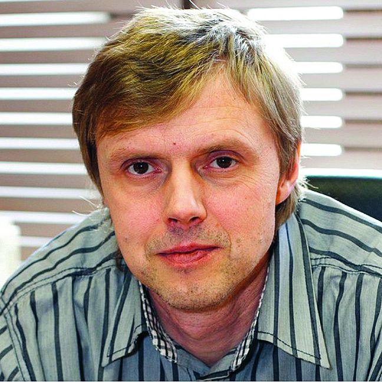

Награды и признание
Победа в конкурсе «1&1»
Победа в конкурсе «1&1» (1992). С пакетом программ SpiderWeb (в него входил Dr.Web) Данилов выиграл этот конкурс для стран Восточной Европы. Наградой стал оплаченный стенд на крупной компьютерной выставке CeBIT’93 в Ганновере, где он смог пообщаться с ведущими специалистами и понять, в каком направлении развивать продукт. Прорыв 1993 года. Созданный им Dr.Web стал первой в мире антивирусной программой, которая распознала и уничтожила полиморфный вирус. Это событие принесло Данилову широкую известность в среде мировых разработчиков антивирусных средств и специалистов по борьбе с вирусами.
Сертификат Министерства обороны РФ
Сертификат Министерства обороны РФ (2000). Это серьёзное признание для коммерческого продукта: Dr.Web получил сертификат соответствия, что открыло ему путь к поставкам в государственные структуры и крупные корпорации. Признание в профессиональном сообществе. Помимо конкретных наград, его вклад оценили коллеги. Данилова называют одним из пионеров в России, кто системно занялся вопросами информационной безопасности и заложил основы отечественной школы антивирусных технологий. При этом сам Игорь Данилов в интервью подчёркивал, что для него в приоритете — защищённость пользователей и качество решений, а не только коммерческая выгода.• Сертификация программного обеспечения: Разработанные Игорем Даниловым антивирусные программы семейства Doctor Web успешно прошли государственные испытания и получили сертификаты соответствия Министерства обороны РФ. Первые сертификаты ведомства антивирус получил еще в 2000 году. • Защита данных: Благодаря этим сертификатам и лицензиям, программные продукты Dr.Web официально поставляются для обеспечения антивирусной защиты информационных систем Министерства обороны Российской Федерации. • Прошлое создателя: Сам Игорь Данилов в прошлом работал инженером по авиационным оборонным проектам в ЦНПО «Ленинец», где занимался оборонными технологиями, что также связывает его биографию с военной сферой.